How we Grow?
-
1850
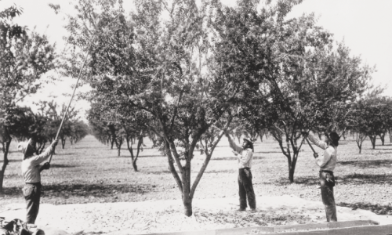California pioneers find an ideal Mediterranean climate in the soils of Sacramento, Monterey and Los Angeles, where they plant their first almonds, giving birth to an industry. -
1910
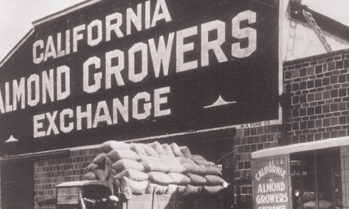The California Almond Growers Exchange is founded, leading development of California's almond industry. -
1914
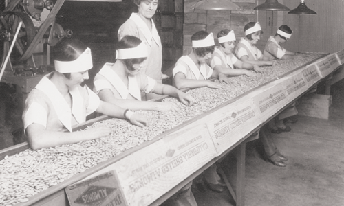The Exchange opens a new receiving and packaging plant, which would later become the largest nut processing plant in the world, covering 33 city blocks on 90 acres. -
1915
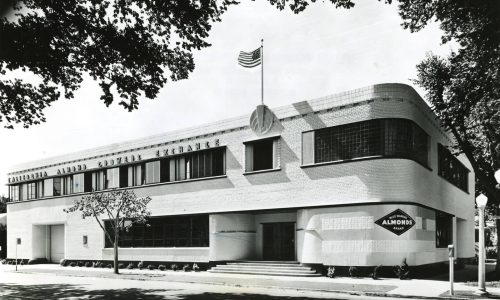The Exchange adopts the blue diamond — the rarest in the world — as the symbol on its label, representing high quality and distinguishing it from Spanish and Italian imports. -
1931
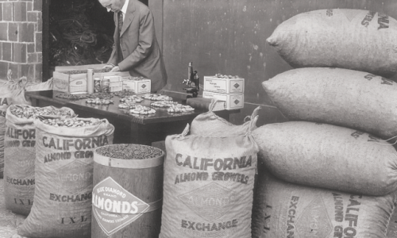20 million pounds of almonds are delivered by four thousand almond growers. -
1931
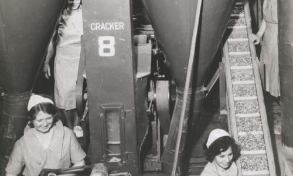The Exchange innovates grading, shelling and other processes to increase market share. Mechanical test grading for quality is introduced. -
1949
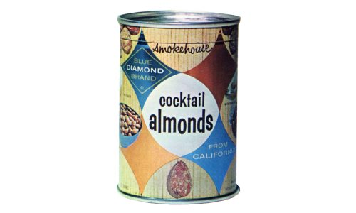The 6-ounce can of Blue Diamond Smokehouse® almonds is first introduced. -
1980
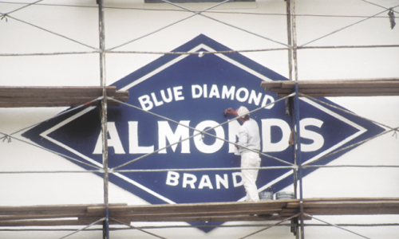The Exchange officially becomes known as Blue Diamond Growers. -
1986
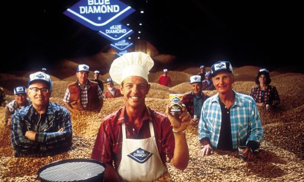Blue Diamond launches A Can A Week ad campaign, in which real almond growers made the pitch “A can a week, that’s all we ask.” -
2010
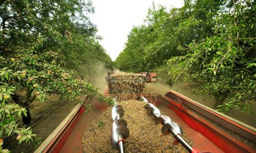Over 1.5 billion pounds of crops delivered to keep up with record-breaking global demand. -
2013
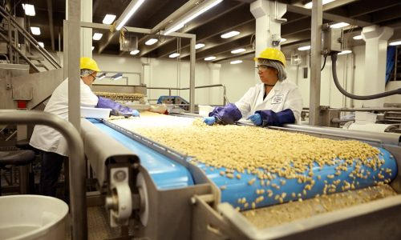Blue Diamond doubles capacity by opening a new plant in Turlock, California, designed to create more value-added global products using state of the art technology. -
2013
Blue Diamond launches A Can A Week ad campaign, in which real almond growers made the pitch “A can a week, that’s all we ask.” -
Today
Working with a new generation of growers, Blue Diamond continues its legacy of bringing the benefits of almonds to the world.